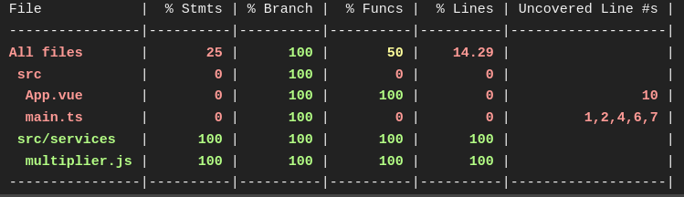

- Зачем?
- Когда?
- Автостопом по тестированию
- Как?
- snapshot-тесты
- unit-тесты
- auto-тесты
- Минусы?
- Быть уверенным в своём коде
- Покрыть редкие кейсы
- Безопасный рефакторинг
- Регресс и стабильность
- Бизнес хочет фич
- Менеджеры хотят фич
- Разработчики хотят фич
- Нет времени
- Никто не любит/не умеет писать тесты
- Перед написанием кода (TDD)
- Вместе с кодом (pullRequest вместе с тестами)
- Перед релизом фичи
- В момент фикса бага (фикс + тест)
-
Юнит-тесты
(отдельные компоненты, функции, модули)
- snapshot-тесты (jest)
- unit-тесты (jest + react-testing-library) -
Интеграционные тесты
(взаимодействие между модулями)
- auto-тесты + моки (cypress) -
end-to-end тесты
(воздействие на систему через интерфейс)
- auto-тесты + backend (cypress) - Некрасивый тест лучше его отсутствия
- Один тест для одного кейса
- Чем модульнее код, тем проще его покрыть тестами
- Тесты не должны зависеть от окружения (Date.now и пр.)
- Тесты должны покрывать крайние/нулевые кейсы
- Тесты - это тоже код (порядок важен)
- "Глупые" компоненты (без состояния)
- Компоненты-обертки над material-ui
- Компоненты с разным внешним видом в зависимости от пропсов
- Написали компонент - сделали снапшот на каждое состояние компонента
- Сделали рефакторинг/изменения - запустили тест
- Утилиты (функции)
- Компоненты
- Функции, в которых вы не уверены
- Крайние случаи
- Встроенные методы
- Методы библиотек
- Очевидные функции (2+2 = 4)
- Пользовательские сценарии
- Валидация форм
- Редиректы
- Реакция интерфейса на действия пользователя и ответы бэкенда
- Зайди на сайт без авторизации
- В шапке должна быть кнопка “sign up”
- Кликни по ней
- Должна открыться форма
- Заполни её
- Дождись замоканного с сервера ответа об успехе
- Должен произойти редирект в личный кабинет.
- Ресурсы на обучение
- Время на написание
- Необходимость поддерживать
- Предсказуемость для разработчика
- Модульность кода
- Документирование
- Безопасность рефактринга
- Стабильность приложения
#поговорим_за_frontend
Тестирование фронтенда & Cypress
Зачем?

Кейсы
Когда?

Почему такое невозможно?
Когда?
Автостопом по тестированию
Виды тестов на фронте по объекту тестирования
Где хранить тесты?
--calculateFactorial.ts
--__tests__
---calculateFactorial.test.ts
--calculateFactorial.ts
--calculateFactorial.test.ts
Структура теста
import { calculateFactorial } from '../calculateFactorial';
describe('calculateFactorial tests', () => {
test('calculateFactorial should return 120 for !5', () => {
const result = calculateFactorial(5);
expect(result).toBe(120);
});
test('calculateFactorial should return 1 for !0', () => {
const result = calculateFactorial(0);
expect(result).toBe(1);
});
});
Mocks
https://fakerjs.dev/Моки — "объект-имитация", объекты/функции, ппредназначенные для симуляции поведения реальных объектов во время тестирования
Test coverage
80%
npx jest --coverage

Гонка за coverage - путь к плохим неээфективным тестам
Правила/рекомендации написания тестов
Snapshot-тесты
Snapshots — это тесты, которые делают скриншот компонента и сравнивают с актуальным скриншотом, который делается во время прогона тестов.
Что тестировать?
Когда тестировать?
❌ Тест упал - изменение ожидаемое или баг?
✅ Тест прошел - вы великолепны!
Как тестировать?
Как тестировать?
Unit-тесты
Что тестировать?
Что не нужно тестировать?
Как тестировать?
Auto-тесты
Что тестировать?
Пример тестового сценария
На чем писать тесты?
Habr: Selenium vs Puppeteer vs Cypress vs PlaywrightWriting Your First E2E Test